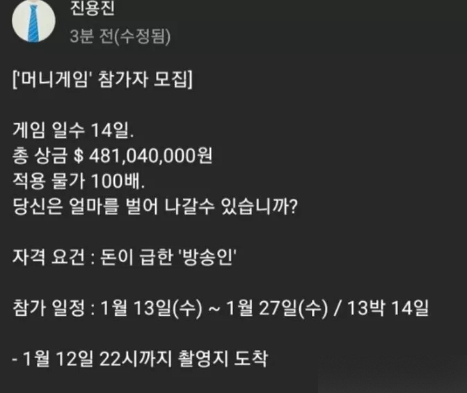

<머니게임 개요>
유튜버 진용진이 기획한 대한민국의 웹 예능.
네이버 웹툰 머니게임을 실사화한 콘텐츠며, 밀폐된 공간과 약 4억 8천만 원의 돈 앞에서 나타나는 숨겨진 인간성을 알아보고자 하는 콘텐츠다.
<머니게임 역사 및 방식>
원작가인 배진수 작가와 네이버 웹툰의 동의를 받고 콘텐츠를 기획하고 2020년 12월 26일부터 참가자를 모집하였다.
'머니게임' 참가자 모집
- 총 상금 481,040,000원(4억8천1백4만원). 끝까지 버텨 승리한 사람은 즉시 진용진이 남은 상금을 분배하여 입금함.
(산정 근거: 2020년 최저시급(8,590원)×노동시간(5시간)×8인×14일×스튜디오 내 특별 환율 100배)
- 자격 요건 : 돈이 급한 '방송인'
- 참가 일정: 2021년 1월 13일~1월 27일. 1월 12일 22시에 전원 스튜디오로 집합하며, 내부에서는 휴대전화 및 외부와의 의사소통은 일절 금지된다. 도중에 포기하고 싶으면 상금을 포기하고 스튜디오에서 나갈 수 있다.
- 신청양식: 이름(활동명) / 성별 / 나이 / 전화번호 / MBTI 유형[10][11]/ 지원동기 / 특이사항(흡연 유무 등)
콘텐츠 제작 예고 이후 한동안 소식이 없다가 2021년 3월 6일 영상 댓글에서, 이미 촬영은 끝났으며 무려 240TB나 되는 어마어마한 촬영분이 나와 편집에 많은 시간과 애를 먹었다고 한다.
3월 23일, 머니게임의 티저 영상이 올라왔으나, 진용진-이여름 사생활 폭로전으로 머니게임 영상 업로드에 차질이 생겼다. 결국, 4월 22일 영상 업로드 공지가 올라왔다.
진용진의 여론이 급락해 머니게임 예고편의 좋아요와 싫어요의 비율이 2.27 대 1까지 오른 이후 진용진의 유튜브 채널에 업로드되기 힘들 수도 있다는 예상이 있었고, 결국 3월 28일 공지를 통해 진용진의 유튜브 채널에는 업로드되지 않을 예정이라고 결정되었다.
하지만 추후 전국진과 진용진의 지속적인 여론전으로 인해 극적으로 진용진의 여론이 반전되었고, 이에 제작사 및 광고주들과 협의 결과 머니게임은 예정대로 진용진의 채널에서 업로드되는 것으로 결정되었다. 머니게임의 예고편이 올라왔고, 그 영상에서 싫어요 비율도 많은 편이 아니기 때문에 앞으로는 순탄히 진행될 것으로 보인다.
참가자들은 스포일러 없이 간단한 소감이나 후기로 머니게임에 대해 짧게나마 드러냈다.